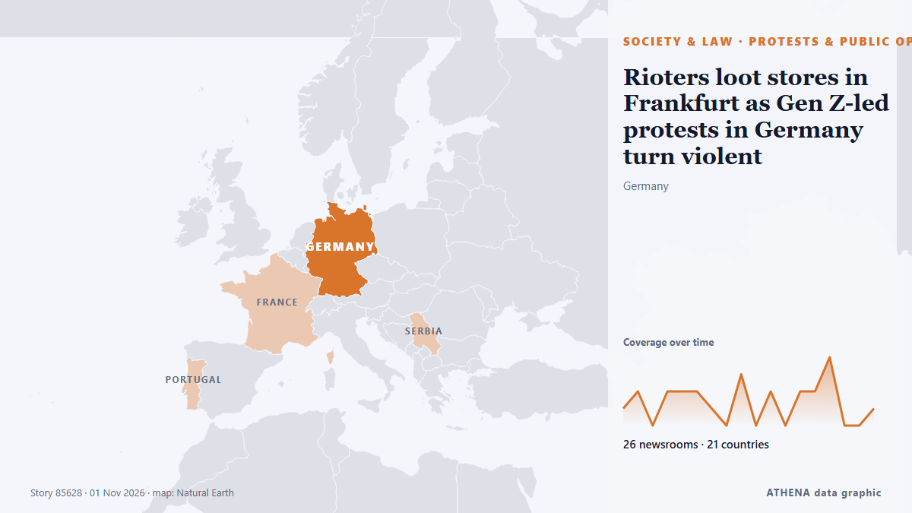

Rioters loot stores in Frankfurt as Gen Z-led protests in Germany turn violent

FRANKFURT/BERLIN: Hooded rioters looted stores in Frankfurt late on Saturday after tens of thousands of demonstrators took to the streets across Germany’s biggest cities to demand better education… from Arab News
Reported independently by 27 outlets in 22 countries since 31 Oct, first by APA (English); coverage is fading. ATHENA rates the risk elevated (4.8/10), driven mainly by the severity of the harm described and its geographic and sector reach — up from 0.0 in the last 24 hours. Confidence is 91% (high), with 27 independent outlets corroborating it and an average source reliability of 74%. Newsrooms by country: Singapore (3), Malaysia (2), United Kingdom (2). Coverage: 31 Oct to 1 Nov, 18 hours.
Why it matters: Legal and policy changes alter rights, obligations and public services for the people they reach.
What changed: 25 new reports from 24 newsrooms in the 24 hours to 1 Nov.
First reported as: Protesters in Germany’s Frankfurt am Main looted gun store
At a glance
Selected, scored and written by ATHENA's published methodology. No editor intervenes in individual events. How this is produced ›
| 31 Oct 21:06 UTC | 1 |
|---|---|
| 31 Oct 22:06 UTC | 2 |
| 31 Oct 23:06 UTC | 0 |
| 01 Nov 00:06 UTC | 2 |
| 01 Nov 01:06 UTC | 2 |
| 01 Nov 02:06 UTC | 2 |
| 01 Nov 03:06 UTC | 1 |
| 01 Nov 04:06 UTC | 0 |
| 01 Nov 05:06 UTC | 3 |
| 01 Nov 06:06 UTC | 0 |
| 01 Nov 07:06 UTC | 2 |
| 01 Nov 08:06 UTC | 0 |
| 01 Nov 09:06 UTC | 2 |
| 01 Nov 10:06 UTC | 2 |
| 01 Nov 11:06 UTC | 4 |
| 01 Nov 12:06 UTC | 0 |
| 01 Nov 13:06 UTC | 0 |
| 01 Nov 14:06 UTC | 1 |
| 01 Nov 15:06 UTC | 1 |
| 31 Oct 21:55 UTC | 0.0 |
|---|---|
| 31 Oct 22:15 UTC | 2.2 |
| 31 Oct 22:53 UTC | 3.6 |
| 01 Nov 02:44 UTC | 4.6 |
| 01 Nov 07:42 UTC | 4.1 |
| 01 Nov 11:14 UTC | 5.1 |
| 01 Nov 15:17 UTC | 4.8 |
Why these numbers
Importance
Risk
Confidence
The reporting — who reported it, and when
headline as published · opens the original- APA (English) · AzerbaijanProtesters in Germany’s Frankfurt am Main looted gun store
- Arab News · Saudi ArabiaRioters loot stores in Frankfurt as Gen Z-led protests in Germany turn violent
- New Straits Times · MalaysiaRioters loot shops as Gen Z protests erupt into violence across Germany
- Al Jazeera English · QatarGen Z-led protests in Germany turn violent
- RTÉ News · IrelandShops looted as protests in Germany escalate
- The Kathmandu Post · NepalRioters loot stores in Frankfurt as Gen Z-led protests in Germany turn violent
- BBC News · United KingdomShops looted as German cost-of-living protests turn violent
- Ada Derana · Sri LankaRioters loot stores in Frankfurt as Gen Z-led protests in Germany turn violent
- CNA (Channel NewsAsia) · SingaporeGerman rioters loot shops as ‘Gen Z’ protests turn ugly
- The Business Times · SingaporeRioters loot stores in Frankfurt as Gen Z-led protests in Germany turn violent
- Indian Express · IndiaGermany Gen Z protests: What young people want, and where clashes broke out
- CBS News (World) · United StatesRioters loot stores in Germany amid cost of living protests
- IOL · South AfricaGerman rioters loot shops as 'Gen Z' protests turn violent
- MyJoyOnline · GhanaShops looted as German cost of living protests turn violent
- Khaama Press · AfghanistanGen Z Protests Turn Violent Across Germany, Shops Looted in Frankfurt
- The Local Germany · GermanyGerman rioters loot shops as 'Gen Z' demos turn ugly
- France 24 English · FranceYouth-led rallies sweep Europe
- Daily Mirror · Sri LankaShops looted as German cost of living protests turn violent
- The Independent · United KingdomRioters loot stores in Germany as Gen Z-led protests turn violent
- Channels TV · NigeriaGermany ‘Gen Z Regelt’ Protest Turned Violent As Rioters Loot Shops
- NBC News (World) · United StatesStores looted in German riots as Gen Z activists protest living costs, military service
- Nile Post · UgandaShops looted as German cost of living protests turn violent
- Free Malaysia Today · MalaysiaRioters loot stores in Frankfurt as Gen Z-led protests in Germany turn violent
- CNA (Channel NewsAsia) · SingaporeCNA Explains: Why are violent Gen Z protests breaking out across Europe?
- Tehran Times · IranProtestors loot shops in Frankfurt